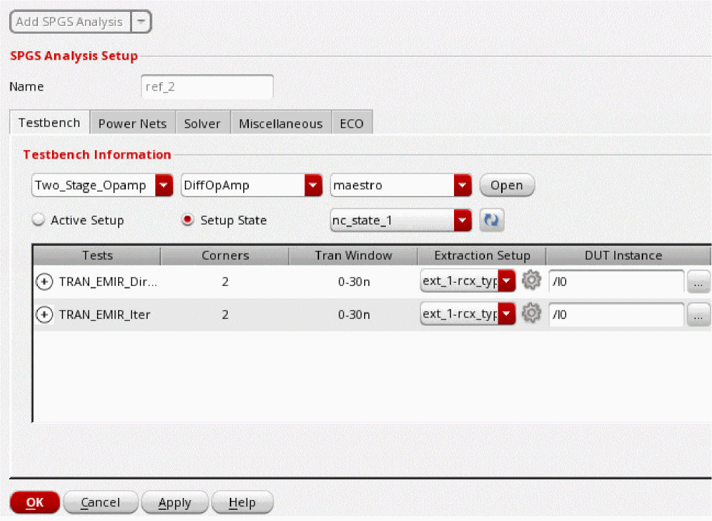
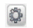
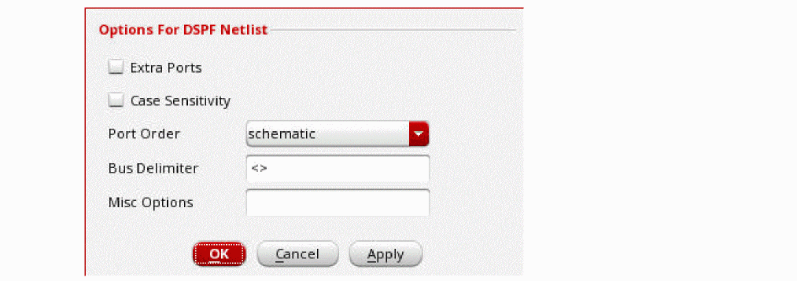
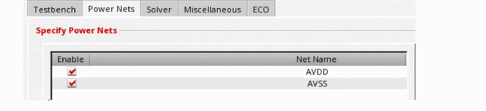
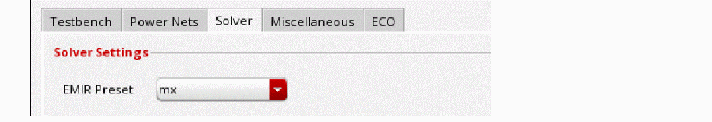
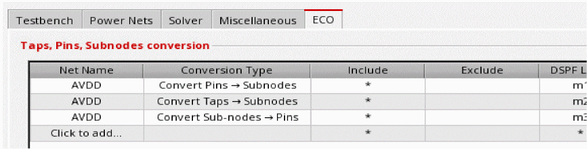

Performing Static Power Grid Solver Analysis
- Choose Setup – Analyses from the task pane.
-
Select Static Power Grid Solver or SPGS Analysis from the drop-down list, and click Add SPGS Analysis.
-
In the Name field, specify a name for the analysis setup.
 -
On the Testbench tab, import the testbench setup information from Virtuoso® ADE Explorer or Virtuoso® ADE Assembler.
To import the simulation setup from ADE:- In the Testbench Information section, specify the maestro cellview from which to import a testbench setup.
- You can view the testbench setup in ADE by clicking Open next to the maestro cellview.
-
Click Active Setup or Setup State to select the testbench setup to use.
-
Click the + sign next to a test to view all the simulation corners defined for the test. You can map each simulation corner to a different extraction setup.
The DUT instance field will be automatically populated. If the DUT Instance name is not given, you can interactively select an instance from the schematic by clicking the browse button. -
You can click the Advanced Settings (
) icon in the Extraction Setup column to specify the following additional options for handling DSPF netlist.
- Extra Ports - If the port number in DSPF does not match the port number in the schematic netlist instance call, this option can be used to automatically handle extra ports. When selected, the extra ports in the DSPF subcircuit call are changed to internal nodes. In addition, the extra ports in the schematic subcircuit definition are connected to the nodes with the same name in the DSPF netlist.
- Case Sensitivity - Select this option to make the DSPF file case-sensitive.
- Port Order - Specifies whether the port order is taken from the schematic subcircuit definition or from the DSPF subcircuit definition.
- Bus Delimiter - Defines the bus delimiter in the DSPF netlist.
- Misc Options - Specifies additional options for the DSPF netlist.
-
On the Power Nets tab, select the nets that you want to include in the analysis.
 -
On the Solver tab, select an EM-IR preset option.
 -
On the Miscellaneous tab, specify the additional options for the EM-IR run and the ECO file for what-if analysis. The ECO File option is supported only when the solver method is 2-Stage.
-
On the ECO tab, select the net name, conversion type, tap/pin/node to be included and excluded, and the DSPF layer name. You can specify * to include all items to be converted. The Include field should not be empty.
The following statements are included in the EMIR configuration file when the tap node,MPM3@44:sof netAVDDis converted to a pin; the subnodeVDD:5of netAVDDis converted to a tap node, and all pins of netAVDDare converted to subnodes:
spgs tap2pin net=[AVDD] include=[MPM3@44:s] layer[m1]
spgs sub2tap net=[AVDD] include=[VDD:5] layer[m2]
spgs pin2sub net=[AVDD] include=[*] layer[m3] -
Click OK.
The analysis details will be displayed in the Analyses tab. You can click Add SPGS Analysis again to add multiple analyses.
Related Topics
- Voltus-XFi EM-IR GUI – Setup Tab
- Viewing EM-IR Analysis Results
- Performing Dynamic Analysis
- Performing Static Analysis
- EMIR
Return to top